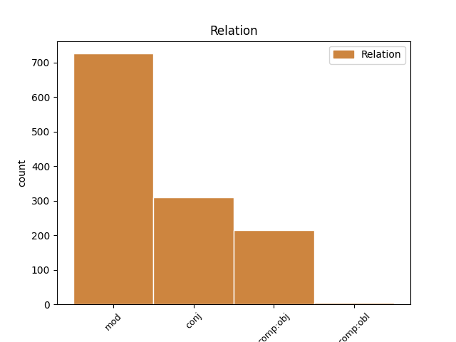

Distribution of features within this leaf

Agreement Rules sorted by frequency.
- When the dependent token is the modifer(mod) of the head token, and the head token is NOUN and the dependent token is NOUN.
1 idem _ _ _ _ 0 _ _ _
2 facit _ _ _ _ 0 _ _ _
3 hostium hostis NOUN n-p---mg- Case=Gen|Gender=Masc|Number=Plur 4 mod _ LId=hostis1
4 exercitus exercitus NOUN n-s---mn- Case=Nom|Gender=Masc|Number=Sing 0 _ _ _
5 . _ _ _ _ 0 _ _ _
1 ita _ _ _ _ 0 _ _ _
2 varie _ _ _ _ 0 _ _ _
3 per _ _ _ _ 0 _ _ _
4 omnem _ _ _ _ 0 _ _ _
5 exercitum _ _ _ _ 0 _ _ _
6 laetitia _ _ _ _ 0 _ _ _
7 , _ _ _ _ 0 _ _ _
8 maeror maeror NOUN n-s---mn- Case=Nom|Gender=Masc|Number=Sing 0 _ _ _
9 , _ _ _ _ 0 _ _ _
10 luctus luctus NOUN n-s---mn- Case=Nom|Gender=Masc|Number=Sing 8 conj _ LId=luctus1
11 atque _ _ _ _ 0 _ _ _
12 gaudia _ _ _ _ 0 _ _ _
13 agitabantur _ _ _ _ 0 _ _ _
14 . _ _ _ _ 0 _ _ _
1 sed _ _ _ _ 0 _ _ _
2 inertia _ _ _ _ 0 _ _ _
3 et _ _ _ _ 0 _ _ _
4 mollitia _ _ _ _ 0 _ _ _
5 animi _ _ _ _ 0 _ _ _
6 alius _ _ _ _ 0 _ _ _
7 alium _ _ _ _ 0 _ _ _
8 expectantes _ _ _ _ 0 _ _ _
9 cunctamini _ _ _ _ 0 _ _ _
10 , _ _ _ _ 0 _ _ _
11 videlicet _ _ _ _ 0 _ _ _
12 dis deus NOUN n-p---md- Case=Dat|Gender=Masc|Number=Plur 14 comp:obj _ LId=deus1
13 inmortalibus _ _ _ _ 0 _ _ _
14 confisi confido VERB v-prppmn- Aspect=Perf|Case=Nom|Gender=Masc|Number=Plur|Tense=Past|VerbForm=Part|Voice=Pass 0 _ _ _
15 , _ _ _ _ 0 _ _ _
16 qui _ _ _ _ 0 _ _ _
17 hanc _ _ _ _ 0 _ _ _
18 rem _ _ _ _ 0 _ _ _
19 publicam _ _ _ _ 0 _ _ _
20 saepe _ _ _ _ 0 _ _ _
21 in _ _ _ _ 0 _ _ _
22 maxumis _ _ _ _ 0 _ _ _
23 periculis _ _ _ _ 0 _ _ _
24 servavere _ _ _ _ 0 _ _ _
25 . _ _ _ _ 0 _ _ _
1 ipse _ _ _ _ 0 _ _ _
2 equo equus NOUN n-s---mb- Case=Abl|Gender=Masc|Number=Sing 3 mod _ LId=equus1
3 circumiens circumeo VERB v--ppamn- Case=Nom|Gender=Masc|Tense=Pres|VerbForm=Part|Voice=Act 0 _ _ _
4 unum _ _ _ _ 0 _ _ _
5 quemque _ _ _ _ 0 _ _ _
6 nominans _ _ _ _ 0 _ _ _
7 appellat _ _ _ _ 0 _ _ _
8 , _ _ _ _ 0 _ _ _
9 hortatur _ _ _ _ 0 _ _ _
10 , _ _ _ _ 0 _ _ _
11 rogat _ _ _ _ 0 _ _ _
12 , _ _ _ _ 0 _ _ _
13 ut _ _ _ _ 0 _ _ _
14 meminerint _ _ _ _ 0 _ _ _
15 se _ _ _ _ 0 _ _ _
16 contra _ _ _ _ 0 _ _ _
17 latrones _ _ _ _ 0 _ _ _
18 inermis _ _ _ _ 0 _ _ _
19 pro _ _ _ _ 0 _ _ _
20 patria _ _ _ _ 0 _ _ _
21 , _ _ _ _ 0 _ _ _
22 pro _ _ _ _ 0 _ _ _
23 liberis _ _ _ _ 0 _ _ _
24 , _ _ _ _ 0 _ _ _
25 pro _ _ _ _ 0 _ _ _
26 aris _ _ _ _ 0 _ _ _
27 atque _ _ _ _ 0 _ _ _
28 focis _ _ _ _ 0 _ _ _
29 suis _ _ _ _ 0 _ _ _
30 certare _ _ _ _ 0 _ _ _
31 . _ _ _ _ 0 _ _ _
1 at _ _ _ _ 0 _ _ _
2 ex _ _ _ _ 0 _ _ _
3 altera _ _ _ _ 0 _ _ _
4 parte _ _ _ _ 0 _ _ _
5 C _ _ _ _ 0 _ _ _
6 . _ _ _ _ 0 _ _ _
7 Antonius _ _ _ _ 0 _ _ _
8 , _ _ _ _ 0 _ _ _
9 pedibus pes NOUN n-p---mb- Case=Abl|Gender=Masc|Number=Plur 10 mod _ LId=pes1
10 aeger aeger ADJ a-s---mn- Case=Nom|Gender=Masc|Number=Sing 0 _ _ _
11 quod _ _ _ _ 0 _ _ _
12 proelio _ _ _ _ 0 _ _ _
13 adesse _ _ _ _ 0 _ _ _
14 nequibat _ _ _ _ 0 _ _ _
15 , _ _ _ _ 0 _ _ _
16 M _ _ _ _ 0 _ _ _
17 . _ _ _ _ 0 _ _ _
18 Petreio _ _ _ _ 0 _ _ _
19 legato _ _ _ _ 0 _ _ _
20 exercitum _ _ _ _ 0 _ _ _
21 permittit _ _ _ _ 0 _ _ _
22 . _ _ _ _ 0 _ _ _
1 Interea _ _ _ _ 0 _ _ _
2 plebs _ _ _ _ 0 _ _ _
3 coniuratione _ _ _ _ 0 _ _ _
4 patefacta _ _ _ _ 0 _ _ _
5 , _ _ _ _ 0 _ _ _
6 quae _ _ _ _ 0 _ _ _
7 primo _ _ _ _ 0 _ _ _
8 cupida cupidus ADJ a-s---fn- Case=Nom|Gender=Fem|Number=Sing 0 _ _ _
9 rerum res NOUN n-p---fg- Case=Gen|Gender=Fem|Number=Plur 8 comp:obj _ LId=res1
10 novarum _ _ _ _ 0 _ _ _
11 nimis _ _ _ _ 0 _ _ _
12 bello _ _ _ _ 0 _ _ _
13 favebat _ _ _ _ 0 _ _ _
14 , _ _ _ _ 0 _ _ _
15 mutata _ _ _ _ 0 _ _ _
16 mente _ _ _ _ 0 _ _ _
17 Catilinae _ _ _ _ 0 _ _ _
18 consilia _ _ _ _ 0 _ _ _
19 execrari _ _ _ _ 0 _ _ _
20 , _ _ _ _ 0 _ _ _
21 Ciceronem _ _ _ _ 0 _ _ _
22 ad _ _ _ _ 0 _ _ _
23 caelum _ _ _ _ 0 _ _ _
24 tollere _ _ _ _ 0 _ _ _
25 : _ _ _ _ 0 _ _ _
1 Volturcius _ _ _ _ 0 _ _ _
2 interrogatus _ _ _ _ 0 _ _ _
3 de _ _ _ _ 0 _ _ _
4 itinere _ _ _ _ 0 _ _ _
5 , _ _ _ _ 0 _ _ _
6 de _ _ _ _ 0 _ _ _
7 litteris _ _ _ _ 0 _ _ _
8 , _ _ _ _ 0 _ _ _
9 postremo _ _ _ _ 0 _ _ _
10 quid quis PRON p-s---na- Case=Acc|Gender=Neut|Number=Sing 0 _ _ _
11 aut _ _ _ _ 0 _ _ _
12 qua _ _ _ _ 0 _ _ _
13 de _ _ _ _ 0 _ _ _
14 causa _ _ _ _ 0 _ _ _
15 consili consilium NOUN n-s---ng- Case=Gen|Gender=Neut|Number=Sing 10 mod _ LId=consilium1
16 habuisset _ _ _ _ 0 _ _ _
17 , _ _ _ _ 0 _ _ _
18 primo _ _ _ _ 0 _ _ _
19 fingere _ _ _ _ 0 _ _ _
20 alia _ _ _ _ 0 _ _ _
21 , _ _ _ _ 0 _ _ _
22 dissimulare _ _ _ _ 0 _ _ _
23 de _ _ _ _ 0 _ _ _
24 coniuratione _ _ _ _ 0 _ _ _
25 ; _ _ _ _ 0 _ _ _
1 qui _ _ _ _ 0 _ _ _
2 mihi ego PRON p-s---md- Case=Dat|Gender=Masc|Number=Sing 0 _ _ _
3 atque _ _ _ _ 0 _ _ _
4 animo animus NOUN n-s---md- Case=Dat|Gender=Masc|Number=Sing 2 conj _ LId=animus1
5 meo _ _ _ _ 0 _ _ _
6 nullius _ _ _ _ 0 _ _ _
7 umquam _ _ _ _ 0 _ _ _
8 delicti _ _ _ _ 0 _ _ _
9 gratiam _ _ _ _ 0 _ _ _
10 fecissem _ _ _ _ 0 _ _ _
11 , _ _ _ _ 0 _ _ _
12 haud _ _ _ _ 0 _ _ _
13 facile _ _ _ _ 0 _ _ _
14 alterius _ _ _ _ 0 _ _ _
15 lubidini _ _ _ _ 0 _ _ _
16 male _ _ _ _ 0 _ _ _
17 facta _ _ _ _ 0 _ _ _
18 condonabam _ _ _ _ 0 _ _ _
19 . _ _ _ _ 0 _ _ _
1 nunc _ _ _ _ 0 _ _ _
2 iam _ _ _ _ 0 _ _ _
3 aperte _ _ _ _ 0 _ _ _
4 rem _ _ _ _ 0 _ _ _
5 publicam _ _ _ _ 0 _ _ _
6 universam _ _ _ _ 0 _ _ _
7 petis _ _ _ _ 0 _ _ _
8 , _ _ _ _ 0 _ _ _
9 templa templum NOUN n-p---na- Case=Acc|Gender=Neut|Number=Plur 0 _ _ _
10 deorum _ _ _ _ 0 _ _ _
11 immortalium _ _ _ _ 0 _ _ _
12 , _ _ _ _ 0 _ _ _
13 tecta tectum NOUN n-p---na- Case=Acc|Gender=Neut|Number=Plur 9 comp:obj _ LId=tectum1
14 urbis _ _ _ _ 0 _ _ _
15 , _ _ _ _ 0 _ _ _
16 vitam _ _ _ _ 0 _ _ _
17 omnium _ _ _ _ 0 _ _ _
18 civium _ _ _ _ 0 _ _ _
19 , _ _ _ _ 0 _ _ _
20 Italiam _ _ _ _ 0 _ _ _
21 totam _ _ _ _ 0 _ _ _
22 ad _ _ _ _ 0 _ _ _
23 exitium _ _ _ _ 0 _ _ _
24 et _ _ _ _ 0 _ _ _
25 vastitatem _ _ _ _ 0 _ _ _
26 vocas _ _ _ _ 0 _ _ _
27 . _ _ _ _ 0 _ _ _
1 igitur _ _ _ _ 0 _ _ _
2 confirmato _ _ _ _ 0 _ _ _
3 animo _ _ _ _ 0 _ _ _
4 vocari _ _ _ _ 0 _ _ _
5 ad _ _ _ _ 0 _ _ _
6 sese _ _ _ _ 0 _ _ _
7 iubet _ _ _ _ 0 _ _ _
8 Lentulum _ _ _ _ 0 _ _ _
9 , _ _ _ _ 0 _ _ _
10 Cethegum _ _ _ _ 0 _ _ _
11 , _ _ _ _ 0 _ _ _
12 Statilium _ _ _ _ 0 _ _ _
13 , _ _ _ _ 0 _ _ _
14 Gabinium Gabinius ADJ a-s---ma- Case=Acc|Gender=Masc|Number=Sing 0 _ _ _
15 que _ _ _ _ 0 _ _ _
16 item _ _ _ _ 0 _ _ _
17 Caeparium Caeparius NOUN n-s---ma- Case=Acc|Gender=Masc|Number=Sing 14 conj _ LId=Caeparius2
18 Terracinensem _ _ _ _ 0 _ _ _
19 , _ _ _ _ 0 _ _ _
20 qui _ _ _ _ 0 _ _ _
21 in _ _ _ _ 0 _ _ _
22 Apuliam _ _ _ _ 0 _ _ _
23 ad _ _ _ _ 0 _ _ _
24 concitanda _ _ _ _ 0 _ _ _
25 servitia _ _ _ _ 0 _ _ _
26 proficisci _ _ _ _ 0 _ _ _
27 parabat _ _ _ _ 0 _ _ _
28 . _ _ _ _ 0 _ _ _
1 Quid _ _ _ _ 0 _ _ _
2 credis _ _ _ _ 0 _ _ _
3 illi _ _ _ _ 0 _ _ _
4 accidere _ _ _ _ 0 _ _ _
5 , _ _ _ _ 0 _ _ _
6 qui _ _ _ _ 0 _ _ _
7 magnas _ _ _ _ 0 _ _ _
8 opes _ _ _ _ 0 _ _ _
9 Exaggerare _ _ _ _ 0 _ _ _
10 quaerit _ _ _ _ 0 _ _ _
11 omni _ _ _ _ 0 _ _ _
12 vigilia _ _ _ _ 0 _ _ _
13 , _ _ _ _ 0 _ _ _
14 Docto _ _ _ _ 0 _ _ _
15 labori labor NOUN n-s---md- Case=Dat|Gender=Masc|Number=Sing 17 comp:obl _ LId=labor2
16 dulce _ _ _ _ 0 _ _ _
17 praeponens praepono VERB v-spp-mn- Case=Nom|Gender=Masc|Number=Sing|Tense=Pres|VerbForm=Part 0 _ _ _
18 lucrum _ _ _ _ 0 _ _ _
19 ? _ _ _ _ 0 _ _ _
1 scribunt _ _ _ _ 0 _ _ _
2 quidam _ _ _ _ 0 _ _ _
3 trecentos trecenti NUM m-p---ma- Case=Acc|Gender=Masc|Number=Plur 0 _ _ _
4 ex _ _ _ _ 0 _ _ _
5 dediticiis _ _ _ _ 0 _ _ _
6 electos _ _ _ _ 0 _ _ _
7 utriusque _ _ _ _ 0 _ _ _
8 ordinis ordo NOUN n-s---mg- Case=Gen|Gender=Masc|Number=Sing 3 mod _ _
9 ad _ _ _ _ 0 _ _ _
10 aram _ _ _ _ 0 _ _ _
11 Diuo _ _ _ _ 0 _ _ _
12 Iulio _ _ _ _ 0 _ _ _
13 extructam _ _ _ _ 0 _ _ _
14 Idibus _ _ _ _ 0 _ _ _
15 Martiis _ _ _ _ 0 _ _ _
16 hostiarum _ _ _ _ 0 _ _ _
17 more _ _ _ _ 0 _ _ _
18 mactatos _ _ _ _ 0 _ _ _
19 . _ _ _ _ 0 _ _ _
1 at _ _ _ _ 0 _ _ _
2 hi hic PRON p-p---mn- Case=Nom|Gender=Masc|Number=Plur 0 _ _ _
3 contra _ _ _ _ 0 _ _ _
4 , _ _ _ _ 0 _ _ _
5 ignavissumi _ _ _ _ 0 _ _ _
6 homines homo NOUN n-p---mn- Case=Nom|Gender=Masc|Number=Plur 2 appos _ LId=homo1|SpaceAfter=No
7 , _ _ _ _ 0 _ _ _
8 per _ _ _ _ 0 _ _ _
9 summum _ _ _ _ 0 _ _ _
10 scelus _ _ _ _ 0 _ _ _
11 omnia _ _ _ _ 0 _ _ _
12 ea _ _ _ _ 0 _ _ _
13 sociis _ _ _ _ 0 _ _ _
14 adimere _ _ _ _ 0 _ _ _
15 , _ _ _ _ 0 _ _ _
16 quae _ _ _ _ 0 _ _ _
17 fortissumi _ _ _ _ 0 _ _ _
18 viri _ _ _ _ 0 _ _ _
19 victores _ _ _ _ 0 _ _ _
20 reliquerant _ _ _ _ 0 _ _ _
21 : _ _ _ _ 0 _ _ _
Disagree Examples:
1 Praedator _ _ _ _ 0 _ _ _
2 intervenit _ _ _ _ 0 _ _ _
3 partem pars NOUN n-s---fa- Case=Acc|Gender=Fem|Number=Sing 4 comp:obj _ _
4 postulans postulo VERB v-spp-mn- Case=Nom|Gender=Masc|Number=Sing|Tense=Pres|VerbForm=Part 0 _ _ _
5 . _ _ _ _ 0 _ _ _
1 Aetatis aetas NOUN n-s---fg- Case=Gen|Gender=Fem|Number=Sing 3 mod _ _
2 mediae _ _ _ _ 0 _ _ _
3 quendam quidam PRON p-s---ma- Case=Acc|Gender=Masc|Number=Sing 0 _ _ _
4 mulier _ _ _ _ 0 _ _ _
5 non _ _ _ _ 0 _ _ _
6 rudis _ _ _ _ 0 _ _ _
7 Tenebat _ _ _ _ 0 _ _ _
8 annos _ _ _ _ 0 _ _ _
9 celans _ _ _ _ 0 _ _ _
10 elegantia _ _ _ _ 0 _ _ _
11 , _ _ _ _ 0 _ _ _
12 Animos _ _ _ _ 0 _ _ _
13 que _ _ _ _ 0 _ _ _
14 eiusdem _ _ _ _ 0 _ _ _
15 pulchra _ _ _ _ 0 _ _ _
16 iuvenis _ _ _ _ 0 _ _ _
17 ceperat _ _ _ _ 0 _ _ _
18 . _ _ _ _ 0 _ _ _
1 Aetatis _ _ _ _ 0 _ _ _
2 mediae _ _ _ _ 0 _ _ _
3 quendam _ _ _ _ 0 _ _ _
4 mulier _ _ _ _ 0 _ _ _
5 non _ _ _ _ 0 _ _ _
6 rudis _ _ _ _ 0 _ _ _
7 Tenebat _ _ _ _ 0 _ _ _
8 annos annus NOUN n-p---ma- Case=Acc|Gender=Masc|Number=Plur 9 comp:obj _ _
9 celans celo VERB v-spp-fn- Case=Nom|Gender=Fem|Number=Sing|Tense=Pres|VerbForm=Part 0 _ _ _
10 elegantia _ _ _ _ 0 _ _ _
11 , _ _ _ _ 0 _ _ _
12 Animos _ _ _ _ 0 _ _ _
13 que _ _ _ _ 0 _ _ _
14 eiusdem _ _ _ _ 0 _ _ _
15 pulchra _ _ _ _ 0 _ _ _
16 iuvenis _ _ _ _ 0 _ _ _
17 ceperat _ _ _ _ 0 _ _ _
18 . _ _ _ _ 0 _ _ _
1 Noli _ _ _ _ 0 _ _ _
2 coram _ _ _ _ 0 _ _ _
3 pluribus _ _ _ _ 0 _ _ _
4 Hoc _ _ _ _ 0 _ _ _
5 facere _ _ _ _ 0 _ _ _
6 canibus _ _ _ _ 0 _ _ _
7 , _ _ _ _ 0 _ _ _
8 ne _ _ _ _ 0 _ _ _
9 nos _ _ _ _ 0 _ _ _
10 vivos _ _ _ _ 0 _ _ _
11 devorent _ _ _ _ 0 _ _ _
12 , _ _ _ _ 0 _ _ _
13 Cum _ _ _ _ 0 _ _ _
14 scierint _ _ _ _ 0 _ _ _
15 esse _ _ _ _ 0 _ _ _
16 tale _ _ _ _ 0 _ _ _
17 culpae culpa NOUN n-s---fg- Case=Gen|Gender=Fem|Number=Sing 18 mod _ _
18 praemium praemium NOUN n-s---na- Case=Acc|Gender=Neut|Number=Sing 0 _ _ _
19 . _ _ _ _ 0 _ _ _
1 Sus _ _ _ _ 0 _ _ _
2 nemoris nemus NOUN n-s---ng- Case=Gen|Gender=Neut|Number=Sing 3 mod _ _
3 cultrix cultrix NOUN n-s---fn- Case=Nom|Gender=Fem|Number=Sing 0 _ _ _
4 fetum _ _ _ _ 0 _ _ _
5 ad _ _ _ _ 0 _ _ _
6 imam _ _ _ _ 0 _ _ _
7 posuerat _ _ _ _ 0 _ _ _
8 . _ _ _ _ 0 _ _ _